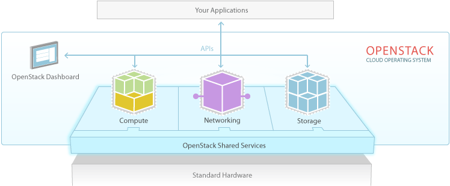

OpenStack as Software

OpenStack
- Software package that provides a cloud platform for
- Public/Private cloud
- Various use cases including Enterprise/Telecom/etc.
- Infrastructure as a Service (IaaS)
- Additional services built upon IaaS

The OpenStack Package
- Flexibility
- Core services (Compute, Networking, Block and Object Storage, etc.)
- Building Blocks: build as you need
- REST APIs
- Software Development Kits (SDKs)
- Documentation
- Packaging
- Distributions
OpenStack from Telecom/NFV perspective
- NFV = Network Function Virtualization
OpenStack from Telecom/NFV perspective
- Virtual Infrastructure Manager (VIM) + NFV Infrastructure (NFVI)
- Most of the OpenStack services
- Virtual Network Functions Manager (VNFM)
- Orchestration service
- Application Catalog service
- Workflow service